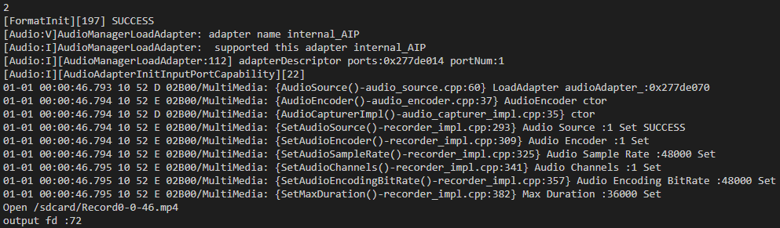
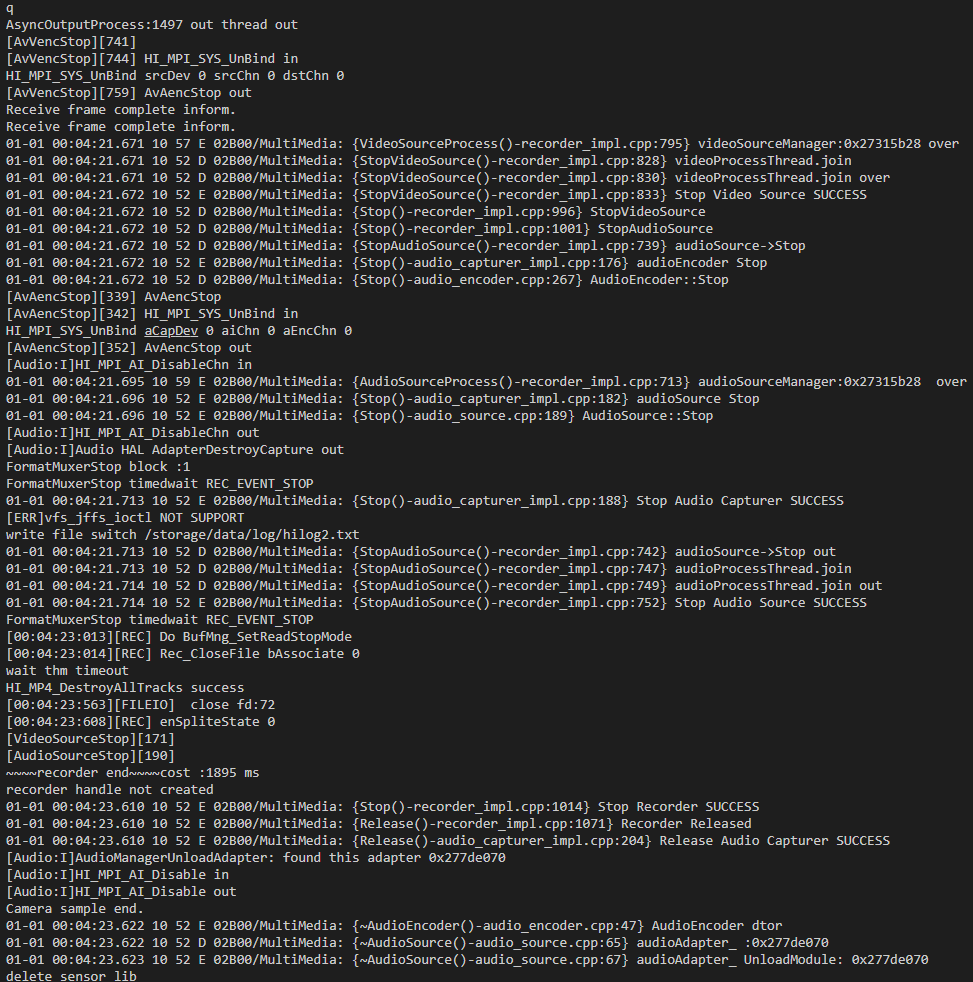

Use Case¶
For details about the development board, compilation, burning, and image running process, see Getting Started with Hi3516. The compilation results include that of the camera_sample program.
The sample code for camera development is stored in applications/sample/camera/media/camera_sample.cpp.
 NOTICE: You should insert a TF card (maximum
capacity: 128 GB) for photographing and video recording functions.
After the system is started, the TF card is automatically mounted
to the /sdcard directory. If the TF card is inserted after the
system is started, you have to manually mount the TF card. To view
the photos and videos in the TF card, copy the content to a
computer. The preview function does not require a TF card.
NOTICE: You should insert a TF card (maximum
capacity: 128 GB) for photographing and video recording functions.
After the system is started, the TF card is automatically mounted
to the /sdcard directory. If the TF card is inserted after the
system is started, you have to manually mount the TF card. To view
the photos and videos in the TF card, copy the content to a
computer. The preview function does not require a TF card.
Start the camera_sample program.
Figure 1 Starting camera_sample
The control commands are displayed as shown in the preceding figure. Press S to stop the current operation (including video recording and preview), and press Q to exit the program.
Press 1 to take a photo in JPG format. The photo is saved in the /sdcard directory and named Capture*.
Figure 2 Serial port logs displayed after the photographing command is executed
To view the saved file, exit the program and enter the file system. To start the program again, return to Step 1.
Figure 3 Saved files
Press 2 to start recording. The video file is in MP4 format and saved in the /sdcard directory with the name Record*. Press S to stop recording.
Figure 4 Serial port logs displayed after the recording command is executedPress 3 to start preview. The preview is displayed on the screen. Press S to stop preview.
Figure 5 Serial port logs displayed after the preview command is executed
The following figure shows the preview.
Figure 6 Preview effect
Press Q to exit.
Figure 7 Serial port logs displayed after the exit command is executed